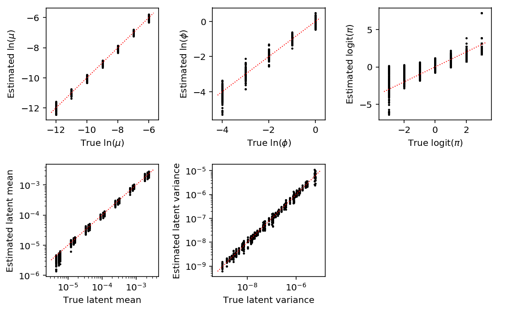
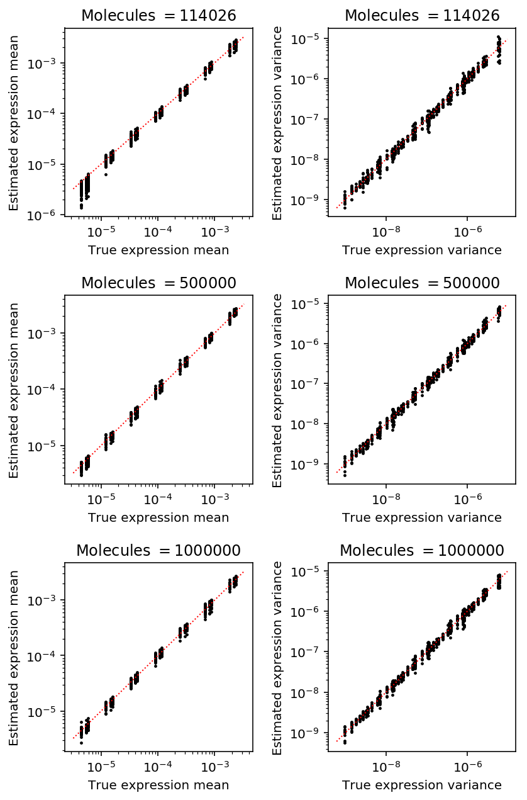
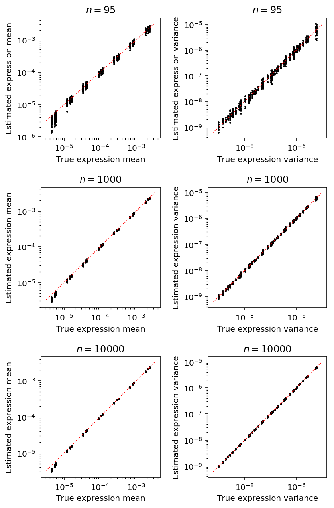
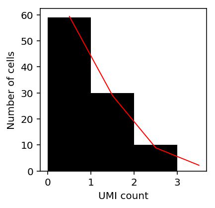
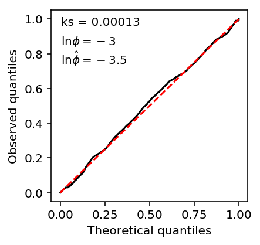
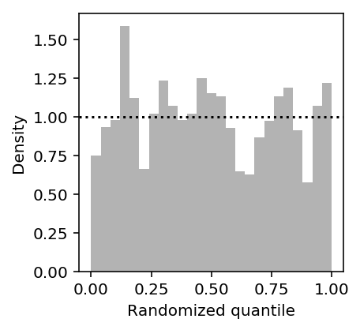
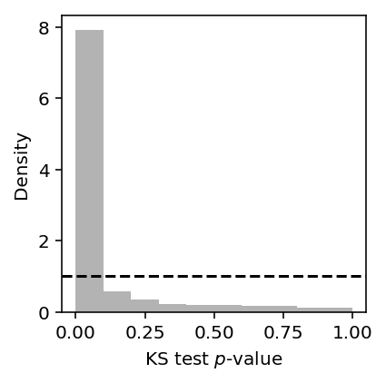
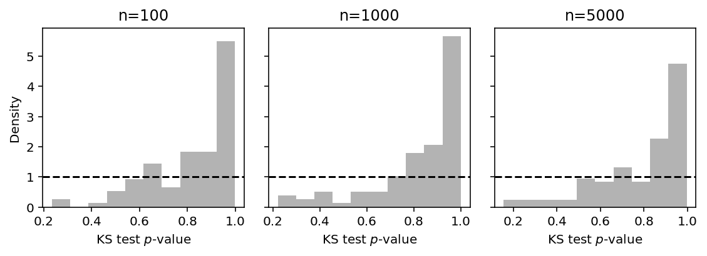
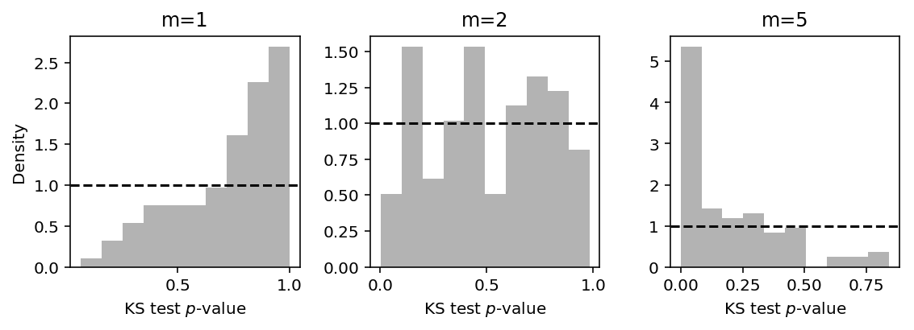
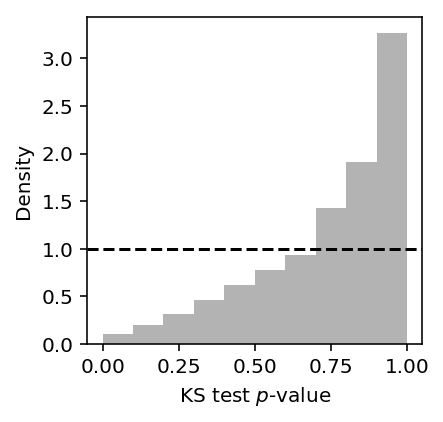

Mean/dispersion estimation
Introduction
We take a modular approach to call QTLs:
- Estimate a mean and a dispersion for each individual
- Treat the mean/dispersion as continuous phenotypes and perform QTL mapping
Here, we solve (1).
- We implement GPU-based ML estimation of a zero-inflated negative binomial model
- We show in simulation that the estimates are unbiased
- We compare ZINB estimates of mean expression against sample-based estimates
- We implement a test for goodness of fit for the ZINB model
Model specification
Let \(r_{ijk}\) denote the number of molecules for individual \(i\), cell \(j\), gene \(k\). Let \(R_{ij}\) denote a size factor for each cell.
\[ r_{ijk} \sim \pi_{ik} \delta_0(\cdot) + (1 - \pi_{ik})\text{Poisson}(\cdot; R_{ij} \mu_{ik} u_{ijk}) \]
\[ u_{ijk} \sim \text{Gamma}(\cdot; \phi_{ik}^{-1}, \phi_{ik}^{-1}) \]
Here, \(\mu_{ik}\) is proportional to relative expression (Pachter 2011), and \(\phi_{ik}\) is the variance of expression noise.
Considering just the Poisson component, marginalizing out \(u\) yields the log likelihood:
\[ l(\cdot) = \ln(1 - \pi_{ik}) + r_{ijk} \ln\left(\frac{R_{ij}\mu_{ik}\phi_{ik}}{1 + R_{ij}\mu_{ik}\phi_{ik}}\right) - \phi_{ik}^{-1} \ln(1 + R_{ij}\mu_{ik}\phi_{ik}) + \ln \Gamma(r_{ijk} + \phi_{ik}^{-1}) - \ln \Gamma(r_{ijk} + 1) - \ln \Gamma(\phi^{-1}) \]
Then, marginalizing over the mixture yields the log likelihood:
\[ \ln p(r_{ijk} \mid \cdot) = \ln(\pi_{ik} + \exp(l(\cdot)))\ \text{if}\ r_{ijk} = 0 \]
\[ \ln p(r_{ijk} \mid \cdot) = l(\cdot)\ \text{otherwise} \]
We have enough observations per mean/dispersion parameter that simply minimizing the negative log likelihood should give reasonable estimates.
This model is equivalent to a model where we assume that the underlying rate is a point-Gamma mixture:
\[ r_{ijk} \mid \lambda_{ijk} \sim \mathrm{Poisson}(\cdot; R_{ij}\lambda_{ijk}) \]
\[ \lambda_{ijk} \sim \pi_{ik} \delta_0(\cdot) + (1 - \pi_{ik}) \text{Gamma}(\lambda_{ijk}; \phi_{ik}^{-1}, \phi_{ik}^{-1}\mu_{ik}^{-1}) \]
The Gamma component of this mixture corresponds to \(\mu_{ik}u_{ijk}\) in the model above. Considering just the Gamma component, marginalizing out \(\lambda\) yields the log likelihood:
\[ \tilde{l}(\cdot) = \ln(1 - \pi_{ik}) + r_{ijk} \ln\left(\frac{R_{ij}}{R_{ij} + \phi_{ik}^{-1}\mu_{ik}^{-1}} \right) + \phi_{ik}^{-1} \ln\left(\frac{\phi_{ik}^{-1}\mu_{ik}^{-1}}{R_{ij} + \phi_{ik}^{-1}\mu_{ik}^{-1}}\right) + \ln\Gamma(r_{ijk} + \phi_{ik}^{-1}) - \ln\Gamma(r_{ijk} + 1) - \ln\Gamma(\phi_{ik}^{-1}) \]
It is clear \(l = \tilde{l}\), and therefore the marginal likelihoods (over the mixture components) are also equal.
Tensorflow implementation
Use tensorflow to optimize all of the parameters together using one-hot
encoding to map parameters to data points. This makes inference more amenable
to running on the GPU.
The method is implemented in the Python package scqtl.
Simulation
<<zinb-imports>> <<tf-imports>> def evaluate(num_samples, num_mols, num_trials=10): # This will be reset inside the simulation to generate counts, but we need to # fix it to get one design matrix for all the simulated genes # def simulate(num_samples, size=None, log_mu=None, log_phi=None, logodds=None, seed=None, design=None, fold=None): design = np.zeros((num_samples * num_trials, 1)) # Important: generate all of the samples for each trial in one shot, and use # one-hot encoding to get separate estimates args = [(num_samples * num_trials, num_mols, log_mu, log_phi, logodds, None, None, None) for log_mu in np.linspace(-12, -6, 7) for log_phi in np.linspace(-4, 0, 5) for logodds in np.linspace(-3, 3, 7)] umi = np.concatenate([scqtl.simulation.simulate(*a)[0][:,:1] for a in args], axis=1) onehot = np.zeros((num_samples * num_trials, num_trials)) onehot[np.arange(onehot.shape[0]), np.arange(onehot.shape[0]) // num_samples] = 1 init = scqtl.tf.fit( umi=umi.astype(np.float32), onehot=onehot.astype(np.float32), design=design.astype(np.float32), size_factor=(num_mols * np.ones((num_samples * num_trials, 1))).astype(np.float32), learning_rate=1e-3, max_epochs=20000, verbose=True, ) log_mu, log_phi, logodds, nb_llik, zinb_llik = scqtl.tf.fit( umi=umi.astype(np.float32), onehot=onehot.astype(np.float32), design=design.astype(np.float32), size_factor=(num_mols * np.ones((num_samples * num_trials, 1))).astype(np.float32), learning_rate=1e-3, max_epochs=20000, warm_start=init[:3], verbose=True) result = pd.DataFrame( [('rmsprop', a[0] // num_trials, int(a[1]), int(a[2]), int(a[3]), int(a[4]), a[-1], trial) for a in args for trial in range(num_trials)], columns=['method', 'num_samples', 'num_mols', 'log_mu', 'log_phi', 'logodds', 'fold', 'trial']) # Important: the results need to be transposed before flattening result['log_mu_hat'] = log_mu.ravel(order='F') result['log_phi_hat'] = log_phi.ravel(order='F') result['logodds_hat'] = logodds.ravel(order='F') result['mean'] = result['num_mols'] * np.exp(result['log_mu_hat']) result['var'] = result['mean'] + np.square(result['mean']) * np.exp(result['log_phi_hat']) log_cpm = np.log(np.ma.masked_values(umi.reshape(num_trials, -1, umi.shape[-1]), 0)) - np.log(num_mols) + 6 * np.log(10) result['mean_log_cpm'] = log_cpm.mean(axis=1).ravel(order='F') result['var_log_cpm'] = log_cpm.var(axis=1).ravel(order='F') diagnostic = [] for i in range(umi.shape[1]): for j in range(onehot.shape[1]): idx = onehot[:,j].astype(bool) diagnostic.append(scqtl.diagnostic.diagnostic_test( umi[idx,i].reshape(-1, 1), log_mu[j,i], log_phi[j,i], -logodds[j,i], num_mols, np.ones((num_samples, 1)))) diagnostic = np.array(diagnostic) result['ks_d'] = diagnostic[:,0] result['ks_p'] = diagnostic[:,1] return result res = evaluate(num_samples=95, num_mols=114026, num_trials=10) res.to_csv('tf-simulation.txt.gz', compression='gzip', sep='\t')
sbatch --partition=gpu2 --gres=gpu:1 --mem=16G --time=1:00:00 --job-name=tf-sim --output=tf-sim.out #!/bin/bash source activate scqtl python /project2/mstephens/aksarkar/projects/singlecell-qtl/code/tf-sim.py
Submitted batch job 55767347
Read the results.
result = pd.read_table('/scratch/midway2/aksarkar/singlecell/density-estimation/tf-simulation.txt.gz', index_col=0)
Get the latent mean and variance.
result['latent_mean'] = np.exp(result['log_mu'] - np.log1p(np.exp(result['logodds']))) result['latent_mean_hat'] = np.exp(result['log_mu_hat'] - np.log1p(np.exp(result['logodds_hat']))) result['latent_var'] = np.exp(2 * result['log_mu'] + result['log_phi'] - np.log1p(np.exp(result['logodds']))) + np.exp(-np.log1p(np.exp(result['logodds'])) - np.log1p(np.exp(-result['logodds'])) + 2 * result['log_mu']) result['latent_var_hat'] = np.exp(2 * result['log_mu_hat'] + result['log_phi_hat'] - np.log1p(np.exp(result['logodds_hat']))) + np.exp(-np.log1p(np.exp(result['logodds_hat'])) - np.log1p(np.exp(-result['logodds_hat'])) + 2 * result['log_mu_hat'])
Plot the accuracy of the estimated parameters and derived quantities, fixing the experiment size.
exp_pass = np.logical_and(result['num_samples'] == 95, result['num_mols'] == 114026) mu_pass = result['log_mu'] > -10 pi_pass = result['logodds'] < 0 plt.clf() fig, ax = plt.subplots(2, 3) fig.set_size_inches(8, 5) subset = result.loc[np.logical_and.reduce(np.vstack([exp_pass, pi_pass]))] ax[0, 0].scatter(subset['log_mu'], subset['log_mu_hat'], s=2, c='k') ax[0, 0].plot(ax[0, 0].get_xlim(), ax[0, 0].get_xlim(), c='r', ls=':', lw=1) ax[0, 0].set_xlabel('True $\ln(\mu)$') ax[0, 0].set_ylabel('Estimated $\ln(\mu)$') ax[1, 0].set_xscale('log') ax[1, 0].set_yscale('log') ax[1, 0].scatter(subset['latent_mean'], subset['latent_mean_hat'], s=2, c='k') ax[1, 0].plot(ax[1, 0].get_xlim(), ax[1, 0].get_xlim(), c='r', ls=':', lw=1) ax[1, 0].set_xlabel('True latent mean') ax[1, 0].set_ylabel('Estimated latent mean') subset = result.loc[np.logical_and.reduce(np.vstack([exp_pass, mu_pass, pi_pass]))] ax[0, 1].scatter(subset['log_phi'], subset['log_phi_hat'], s=2, c='k') ax[0, 1].plot(ax[0, 1].get_xlim(), ax[0, 1].get_xlim(), c='r', ls=':', lw=1) ax[0, 1].set_xlabel('True $\ln(\phi)$') ax[0, 1].set_ylabel('Estimated $\ln(\phi)$') ax[1, 1].set_xscale('log') ax[1, 1].set_yscale('log') ax[1, 1].scatter(subset['latent_var'], subset['latent_var_hat'], s=2, c='k') ax[1, 1].plot(ax[1, 1].get_xlim(), ax[1, 1].get_xlim(), c='r', ls=':', lw=1) ax[1, 1].set_xlabel('True latent variance') ax[1, 1].set_ylabel('Estimated latent variance') subset = result.loc[exp_pass] ax[0, 2].scatter(subset['logodds'], subset['logodds_hat'], s=2, c='k') ax[0, 2].plot(ax[0, 2].get_xlim(), ax[0, 2].get_xlim(), c='r', ls=':', lw=1) ax[0, 2].set_xlabel('True $\mathrm{logit}(\pi)$') ax[0, 2].set_ylabel('Estimated $\mathrm{logit}(\pi)$') ax[1, 2].set_axis_off() fig.tight_layout()

Plot the accuracy of estimated latent mean and variance as a function of number of molecules, holding the number of cells fixed at the median value in the real data.
plt.clf() fig, ax = plt.subplots(3, 2) fig.set_size_inches(6, 9) for i, (k, g) in enumerate(result.loc[result['num_samples'] == 95].groupby('num_mols')): mu_pass = g['log_mu'] > -10 pi_pass = g['logodds'] < 0 subset = g.loc[pi_pass] ax[i, 0].semilogx() ax[i, 0].semilogy() ax[i, 0].scatter(subset['latent_mean'], subset['latent_mean_hat'], s=2, c='k') ax[i, 0].plot(ax[i, 0].get_xlim(), ax[i, 0].get_xlim(), c='r', ls=':', lw=1) ax[i, 0].set_xlabel('True expression mean') ax[i, 0].set_ylabel('Estimated expression mean') ax[i, 0].set_title('Molecules $= {}$'.format(k)) subset = g.loc[functools.reduce(np.logical_and, [mu_pass, pi_pass])] ax[i, 1].semilogx() ax[i, 1].semilogy() ax[i, 1].scatter(subset['latent_var'], subset['latent_var_hat'], s=2, c='k') ax[i, 1].plot(ax[i, 1].get_xlim(), ax[i, 1].get_xlim(), c='r', ls=':', lw=1) ax[i, 1].set_xlabel('True expression variance') ax[i, 1].set_ylabel('Estimated expression variance') ax[i, 1].set_title('Molecules $= {}$'.format(k)) fig.tight_layout()

Plot the accuracy of estimated latent mean and variance as a function of number of cells, holding the number of molecules fixed at the median value in the real data.
plt.clf() fig, ax = plt.subplots(3, 2) fig.set_size_inches(6, 9) for i, (k, g) in enumerate(result.loc[result['num_mols'] == 114026].groupby('num_samples')): mu_pass = g['log_mu'] > -10 pi_pass = g['logodds'] < 0 subset = g.loc[pi_pass] ax[i, 0].semilogx() ax[i, 0].semilogy() ax[i, 0].scatter(subset['latent_mean'], subset['latent_mean_hat'], s=2, c='k') ax[i, 0].plot(ax[i, 0].get_xlim(), ax[i, 0].get_xlim(), c='r', ls=':', lw=1) ax[i, 0].set_xlabel('True expression mean') ax[i, 0].set_ylabel('Estimated expression mean') ax[i, 0].set_title('$n = {}$'.format(k)) subset = g.loc[functools.reduce(np.logical_and, [mu_pass, pi_pass])] ax[i, 1].semilogx() ax[i, 1].semilogy() ax[i, 1].scatter(subset['latent_var'], subset['latent_var_hat'], s=2, c='k') ax[i, 1].plot(ax[i, 1].get_xlim(), ax[i, 1].get_xlim(), c='r', ls=':', lw=1) ax[i, 1].set_xlabel('True expression variance') ax[i, 1].set_ylabel('Estimated expression variance') ax[i, 1].set_title('$n = {}$'.format(k)) fig.tight_layout()

Compare against CPU implementation
We also implemented second-order optimization of the ZINB log likelihood. Compare the simulation results of the GPU implementation to the CPU implementation to make verify.
Write the results to the database backing the interactive browser.
tf_res = pd.read_table('/project2/mstephens/aksarkar/projects/singlecell-qtl/data/density-estimation/tf-simulation.txt.gz', index_col=0) np_res = pd.read_table('/project2/mstephens/aksarkar/projects/singlecell-qtl/data/density-estimation/np-simulation.txt.gz', index_col=0)
np_res['method'] = 'lbfgs' with sqlite3.connect('/project2/mstephens/aksarkar/projects/singlecell-qtl/browser/browser.db') as conn: pd.concat([tf_res, np_res], axis=0, join='inner').to_sql(name='simulation', con=conn, index=False, if_exists='replace') conn.execute('create index ix_simulation on simulation(log_mu, log_phi, logodds);')
Fit ZINB2
Read the data.
keep_samples = pd.read_table('/project2/mstephens/aksarkar/projects/singlecell-qtl/data/quality-single-cells.txt', index_col=0, header=None) keep_genes = pd.read_table('/project2/mstephens/aksarkar/projects/singlecell-qtl/data/genes-pass-filter.txt', index_col=0, header=None) annotations = pd.read_table('/project2/mstephens/aksarkar/projects/singlecell-qtl/data/scqtl-annotation.txt') annotations = annotations.loc[keep_samples.values.ravel()] header = sorted(set(annotations['chip_id'])) umi = pd.read_table('/project2/mstephens/aksarkar/projects/singlecell-qtl/data/scqtl-counts.txt.gz', index_col=0).loc[keep_genes.values.ravel(),keep_samples.values.ravel()] index = umi.index
Prepare the design matrix of covariates.
onehot = recode(annotations, 'chip_id') designs = [] # Null covariate model designs.append(np.zeros((onehot.shape[0], 1))) chip = recode(annotations, 'experiment') chip -= chip.mean(axis=0) designs.append(chip) # These explain most PVE of circular pseudotime (Joyce Hsiao, personal # communication) cell_cycle_genes = [ 'ENSG00000094804', # CDC6 'ENSG00000170312', # CDK1 'ENSG00000175063', # UBE2C 'ENSG00000131747', # TOP2A 'ENSG00000197061', # HIST1H4C ] cell_cycle = (umi.loc[cell_cycle_genes].values / annotations['mol_hs'].values).reshape(-1, len(cell_cycle_genes)) cell_cycle -= cell_cycle.mean(axis=0) cell_cycle /= cell_cycle.std(axis=0) designs.append(cell_cycle) designs.append(np.concatenate([chip, cell_cycle], axis=1))
Estimate the parameters of the zero-inflated model assuming dropout per individual and gene.
<<zinb-imports>> <<tf-imports>> import argparse <<recode-impl>> parser = argparse.ArgumentParser() parser.add_argument('--design', help='Design matrix of confounders', choices=list(range(2)), type=int) args = parser.parse_args() <<read-data-qc-impl>> <<prepare-covars>> umi = umi.T.astype(np.float32) onehot = onehot.astype(np.float32) design = designs[args.design].astype(np.float32) size_factor = annotations['mol_hs'].astype(np.float32).values.reshape(-1, 1) init = scqtl.tf.fit( umi=umi, onehot=onehot, design=design, size_factor=size_factor, learning_rate=1e-3, max_epochs=30000, verbose=True, ) log_mu, log_phi, logodds, nb_nll, zinb_nll, beta = scqtl.tf.fit( umi=umi, onehot=onehot, design=design, size_factor=size_factor, learning_rate=1e-3, warm_start=init[:3], max_epochs=30000, return_beta=True, verbose=True, ) pd.DataFrame(log_mu.T, index=index, columns=header).to_csv('zi2-log-mu.txt.gz', sep=' ', compression='gzip') pd.DataFrame(log_phi.T, index=index, columns=header).to_csv('zi2-log-phi.txt.gz', sep=' ', compression='gzip') pd.DataFrame(logodds.T, index=index, columns=header).to_csv('zi2-logodds.txt.gz', sep=' ', compression='gzip') pd.DataFrame(beta.T, index=index).to_csv('beta.txt.gz', sep=' ', compression='gzip')
sbatch --partition=gpu --gres=gpu:1 --mem=16G --time=7:00:00 -a 1 --job-name=tf-zinb --output=zinb2.out #!/bin/bash source activate scqtl mkdir -p design$SLURM_ARRAY_TASK_ID pushd design$SLURM_ARRAY_TASK_ID python /project2/mstephens/aksarkar/projects/singlecell-qtl/code/tf-zinb.py --design $SLURM_ARRAY_TASK_ID
Submitted batch job 55727034
sbatch --partition=broadwl --time=10 #!/bin/bash cat >.rsync-filter <<EOF + */ + *.txt.gz - * EOF rsync -FFau --delete . /project2/mstephens/aksarkar/projects/singlecell-qtl/data/density-estimation/
Submitted batch job 55767365
numpy/scipy implementation
Optimize the negative log-likelihood.
def log(x): """Numerically safe log""" return np.log(x + 1e-8) def sigmoid(x): """Numerically safe sigmoid""" lim = np.log(np.finfo(np.float64).resolution) return np.clip(sp.expit(x), lim, -lim) def nb(theta, x, size, onehot, design): """Return the per-data point log likelihood x ~ Poisson(size .* design' * theta[2 * m:k] * exp(onehot * theta[:m]) * u) u ~ Gamma(exp(onehot * theta[m:2 * m]), exp(onehot * theta[m:2 * m])) theta - (2 * m + k, 1) x - (n, 1) size - (n, 1) onehot - (n, m) design - (n, k) """ n, m = onehot.shape assert x.shape == (n,) assert size.shape == (n,) assert design.shape[0] == n assert theta.shape == (2 * m + design.shape[1],) mean = size * np.exp(onehot.dot(theta[:m]) + design.dot(theta[2 * m:])) assert mean.shape == (n,) inv_disp = onehot.dot(np.exp(theta[m:2 * m])) assert inv_disp.shape == (n,) return (x * log(mean / inv_disp) - x * log(1 + mean / inv_disp) - inv_disp * log(1 + mean / inv_disp) + sp.gammaln(x + inv_disp) - sp.gammaln(inv_disp) - sp.gammaln(x + 1)) def _nb(theta, x, size, onehot, design=None): """Return the mean negative log likelihood of x""" return -nb(theta, x, size, onehot, design).mean() def zinb(theta, x, size, onehot, design=None): """Return the mean negative log likelihood of x""" n, m = onehot.shape logodds, theta = theta[:m], theta[m:] case_non_zero = -np.log1p(np.exp(onehot.dot(logodds))) + nb(theta, x, size, onehot, design) case_zero = np.logaddexp(onehot.dot(logodds - np.log1p(np.exp(logodds))), case_non_zero) return -np.where(x < 1, case_zero, case_non_zero).mean() def _fit_gene(chunk, onehot, design=None): n, m = onehot.shape assert chunk.shape[0] == n # We need to take care here to initialize mu=-inf for all zero observations x0 = np.log((onehot * chunk[:,:1]).sum(axis=0) / onehot.sum(axis=0)) - np.log(np.ma.masked_values(onehot, 0) * chunk[:,1:]).mean(axis=0).compressed() x0 = np.hstack((x0, np.zeros(m))) if design is not None: assert design.shape[0] == n design -= design.mean(axis=0) x0 = np.hstack((x0, np.zeros(design.shape[1]))) res0 = so.minimize(_nb, x0=x0, args=(chunk[:,0], chunk[:,1], onehot, design)) res = so.minimize(zinb, x0=list(np.zeros(m)) + list(res0.x), args=(chunk[:,0], chunk[:,1], onehot, design)) if res0.fun < res.fun: # This isn't a likelihood ratio test. Numerically, our implementation of # ZINB can't represent pi = 0, so we need to use a separate implementation # for it log_mu = res0.x[:m] neg_log_phi = res0.x[m:2 * m] logit_pi = np.zeros(m) logit_pi.fill(-np.inf) else: logit_pi = res.x[:m] log_mu = res.x[m:2 * m] neg_log_phi = res.x[2 * m:3 * m] mean_by_sample = chunk[:,1] * onehot.dot(np.exp(log_mu)) var_by_sample = mean_by_sample + np.square(mean_by_sample) * onehot.dot(np.exp(-neg_log_phi)) mean_by_ind = np.ma.masked_equal(onehot * mean_by_sample.reshape(-1, 1), 0).mean(axis=0).filled(0) var_by_ind = np.ma.masked_equal(onehot * (np.square(mean_by_sample - onehot.dot(mean_by_ind)) + var_by_sample).reshape(-1, 1), 0).mean(axis=0).filled(0) return [log_mu, -neg_log_phi, logit_pi, mean_by_ind, var_by_ind] def fit_gene(chunk, bootstraps=100): orig = _fit_gene(chunk) B = [] for _ in range(bootstraps): B.append(_fit_gene(chunk[np.random.choice(chunk.shape[0], chunk.shape[0], replace=True)])) se = np.array(B)[:,:2].std(axis=0) return orig + list(se.ravel())
Computing analytic SE runs into numerical problems.
def _pois(theta, x, size): mean = np.exp(theta) mean *= size return (x * log(mean) - mean - sp.gammaln(x + 1)).mean() def _pois_jac(theta, x, size): mean = np.exp(theta) return mean * (x / mean - size).mean() def _nb_jac(theta, x, size): mean, inv_disp = np.exp(theta) T = (1 + size * mean / inv_disp) return mean * (x / mean - size / inv_disp * (x + inv_disp) / T).mean() def check_gradients(x, f, df, args=None, num_trials=100): x = np.array(x) y = f(x, *args) analytic_diff = df(x, *args) error = [] for i in range(num_trials): eps = np.random.normal(scale=1e-4, size=x.shape) num_diff = (f(x + eps, *args) - y) / eps error.append(abs(num_diff - analytic_diff)) return np.array(error)
Simulation
Check the parameter estimation on simulated data.
Assuming simulated confounders \(x\) are isotropic Gaussian, we can derive the scale of \(\beta\) to achieve a specified fold-change in relative abundance:
\[ x \sim N(0, 1) \]
Letting \(\tau\) denote precision:
\[ \beta \sim N(0, \tau) \]
\[ x\beta \sim N(0, 1 + \tau) \]
\[ \mathbb{E}[x\beta] = y = \exp\left(\frac{1}{2 (1 + \tau)}\right) \]
\[ \tau = \frac{1 - 2 \ln y}{2 \ln y} \]
def simulate(num_samples, size=None, log_mu=None, log_phi=None, logodds=None, seed=None, design=None, fold=None): if seed is None: seed = 0 np.random.seed(seed) if log_mu is None: log_mu = np.random.uniform(low=-12, high=-8) if log_phi is None: log_phi = np.random.uniform(low=-6, high=0) if size is None: size = 1e5 if logodds is None: prob = np.random.uniform() else: prob = sp.expit(logodds) if design is None: design = np.random.normal(size=(num_samples, 1)) else: assert design.shape[0] == num_samples if fold is None or np.isclose(fold, 1): beta = np.array([[0]]) else: assert fold > 1 beta = np.random.normal(size=(design.shape[1], 1), scale=2 * np.log(fold) / (1 - 2 * np.log(fold))) n = np.exp(-log_phi) p = 1 / (1 + size * np.exp(log_mu + design.dot(beta) + log_phi)).ravel() x = np.where(np.random.uniform(size=num_samples) < prob, 0, np.random.negative_binomial(n=n, p=p, size=num_samples)) return np.vstack((x, size * np.ones(num_samples))).T, design
def batch_design_matrix(num_samples, num_batches): """Return a matrix of binary indicators representing batch assignment""" design = np.zeros((num_samples, num_batches)) design[np.arange(num_samples), np.random.choice(num_batches, size=num_samples)] = 1 return design def evaluate(num_samples, num_mols, log_mu, log_phi, logodds, fold, trial): x, design = simulate(num_samples=num_samples, size=num_mols, log_mu=log_mu, log_phi=log_phi, logodds=logodds, design=None, fold=fold, seed=trial) onehot = np.ones((num_samples, 1)) keys = ['num_samples', 'num_mols', 'log_mu', 'log_phi', 'logodds', 'trial', 'fold', 'log_mu_hat', 'log_phi_hat', 'logodds_hat', 'mean', 'var'] result = [num_samples, num_mols, log_mu, log_phi, logodds, trial, fold] + [param[0] for param in _fit_gene(x, onehot, design)] result = {k: v for k, v in zip(keys, result)} eps = .5 / num_mols log_cpm = (np.log(np.ma.masked_values(x[:,0], 0) + eps) - np.log(x[:,1] + 2 * eps) + 6 * np.log(10)).compressed() result['mean_log_cpm'] = log_cpm.mean() result['var_log_cpm'] = log_cpm.var() d, p = diagnostic_test(x[:,0], np.atleast_1d(result['log_mu_hat']), np.atleast_1d(result['log_phi_hat']), np.atleast_1d(-result['logodds_hat']), num_mols, onehot) result['ks_d'] = d result['ks_p'] = p return result
Check the implementation actually worked.
x1, design1 = simulate(num_samples=1000, size=1e5, log_mu=-8, log_phi=-6, logodds=-3, seed=0, design=batch_design_matrix(1000, 2), fold=1.1) x2, design2 = simulate(num_samples=1000, size=1e5, log_mu=-9, log_phi=-6, logodds=-3, seed=0, design=batch_design_matrix(1000, 2), fold=1.1)
x = np.vstack((x1, x2)) design = np.vstack((design1, design2)) onehot = np.zeros((2000, 2)) onehot[:1000,0] = 1 onehot[1000:,1] = 1
so.minimize(_nb, np.zeros(6), (x[:,0], x[:,1], onehot, design - design.mean(axis=0)))
fun: 3.7693708861600173 hess_inv: array([[ 2.95492914e-01, -2.26820271e-02, -6.88886930e-02, 3.66568258e-02, -1.35008739e-02, 1.33990791e-02], [-2.26820271e-02, 2.76704513e-01, 4.55879587e-03, 6.39326308e-02, -2.03557128e-02, 2.03675939e-02], [-6.88886930e-02, 4.55879587e-03, 8.40491928e+00, 3.47009715e-01, 1.14991770e-02, -1.17004131e-02], [ 3.66568258e-02, 6.39326308e-02, 3.47009715e-01, 1.93344347e+01, -8.18164095e-03, 6.19982324e-03], [-1.35008739e-02, -2.03557128e-02, 1.14991770e-02, -8.18164095e-03, 6.45950264e-01, 3.54059802e-01], [ 1.33990791e-02, 2.03675939e-02, -1.17004131e-02, 6.19982324e-03, 3.54059802e-01, 6.45930363e-01]]) jac: array([ 6.82473183e-06, 8.34465027e-06, 1.07288361e-06, 8.34465027e-07, 3.75509262e-06, -4.08291817e-06]) message: 'Optimization terminated successfully.' nfev: 280 nit: 30 njev: 35 status: 0 success: True x: array([-7.79891405, -8.79063513, 2.05714587, 2.56621654, 0.16492975, -0.16494031])
so.minimize(zinb, np.zeros(8), (x[:,0], x[:,1], onehot, design - design.mean(axis=0)))
fun: 3.1120455141161147 hess_inv: array([[ 3.91509877e+01, -6.82255452e+00, 3.56651927e-03, -3.60544664e-03, 1.89769061e-03, -3.67396633e-05, -5.05335375e-03, 2.07017842e-03], [-6.82255452e+00, 3.63677578e+01, -2.89665006e-03, 1.89766982e-03, -1.15515147e-03, 1.19995032e-04, 4.03751660e-03, -1.28881738e-03], [ 3.56651927e-03, -2.89665006e-03, 1.00060484e-05, -4.75805864e-06, -1.52866758e-06, -9.78212511e-07, -7.93108063e-09, -9.33841063e-06], [-3.60544664e-03, 1.89766982e-03, -4.75805864e-06, 9.43027846e-06, -1.92946942e-08, -1.76906831e-07, -3.04179309e-07, 5.35291550e-06], [ 1.89769061e-03, -1.15515147e-03, -1.52866758e-06, -1.92946942e-08, 2.96476652e-06, 1.16116940e-06, -4.91977746e-06, 2.37359794e-06], [-3.67396633e-05, 1.19995032e-04, -9.78212511e-07, -1.76906831e-07, 1.16116940e-06, 1.48628846e-06, -1.36236523e-06, 7.97280863e-07], [-5.05335375e-03, 4.03751660e-03, -7.93108063e-09, -3.04179309e-07, -4.91977746e-06, -1.36236523e-06, 1.60495775e-05, -3.42044027e-06], [ 2.07017842e-03, -1.28881738e-03, -9.33841063e-06, 5.35291550e-06, 2.37359794e-06, 7.97280863e-07, -3.42044027e-06, 1.96937195e-05]]) jac: array([-2.98023224e-07, 7.15255737e-07, 9.99987125e-04, -3.08364630e-04, 5.21874428e-03, 7.71874189e-03, 1.99797750e-03, 9.57250595e-05]) message: 'Desired error not necessarily achieved due to precision loss.' nfev: 1942 nit: 80 njev: 193 status: 2 success: False x: array([-3.07858135, -3.07854889, -7.75387174, -8.74631249, 12.91019024, 13.26839552, 0.04538458, -0.28914969])
_fit_gene(x, onehot)
[array([-7.74001987, -8.73200364]), array([-3.50778747, -3.59795896]), array([-3.07854886, -3.07859407]), array([43.50629319, 16.13388663]), array([100.22044275, 23.26084595])]
_fit_gene(x, onehot, design)
[array([-7.74986202, -8.7418084 ]), array([-6.82644387, -6.09474886]), array([-3.0785687 , -3.07861418]), array([43.08019804, 15.97647082]), array([45.09331255, 16.55197158])]
Check what happens on all zero data.
x = np.concatenate((np.zeros((1000, 1)), 1e5 * np.ones((1000, 1))), axis=1) onehot = np.ones((1000, 1))
np.log((onehot * x[:,:1]).sum(axis=0) / onehot.sum(axis=0)) - np.log(np.ma.masked_values(onehot, 0) * x[:,1:]).mean(axis=0).compressed()
array([-inf])
so.minimize(_nb, x0=(-np.inf, 0), args=(x[:,0], x[:,1], onehot))
fun: 9.999999889225288e-09 hess_inv: array([[1, 0], [0, 1]]) jac: array([0.00000000e+00, 1.00000003e-08]) message: 'Optimization terminated successfully.' nfev: 4 nit: 0 njev: 1 status: 0 success: True x: array([-inf, 0.])
_fit_gene(x, onehot)
[array([-inf]), array([-0.]), array([0.]), array([0.]), array([0.])]
_fit_gene(x, onehot, design)
[array([-7.75254245, -8.74529525]), array([-7.38635243, -6.45950176]), array([-3.07849171, -3.07866706]), array([42.9648789 , 15.92086032]), array([44.10874472, 16.3176927 ])]
Check the end-to-end evaluation.
evaluate(num_samples=500, num_mols=1e5, log_mu=-8, log_phi=-6, logodds=-3, fold=None, trial=1)
{'fold': None,
'ks_d': 0.02216464461580947,
'ks_p': 9.23381354739375e-22,
'log_mu': -8,
'log_mu_hat': -7.995410361780751,
'log_phi': -6,
'log_phi_hat': -6.032810431842001,
'logodds': -3,
'logodds_hat': -2.9873654919335273,
'mean': 33.700581863533316,
'mean_log_cpm': 5.803550886989237,
'num_mols': 100000.0,
'num_samples': 500,
'trial': 1,
'var': 36.42490436676706,
'var_log_cpm': 0.03387162521847725}
%timeit evaluate(num_samples=5000, num_mols=1e5, log_mu=-8, log_phi=-6, logodds=-3, fold=1.1, trial=0)
1.41 s ± 449 µs per loop (mean ± std. dev. of 7 runs, 1 loop each)
Investigate what happens as the number of confounders increases.
design = np.random.normal(size=(300, 20)) x, _ = simulate(num_samples=300, size=1e5, log_mu=-8, log_phi=-6, logodds=-3, seed=0, design=design, fold=1.1) _fit_gene(x, design)
[-8.00649125343069, -6.410804905890429, -2.99891159295469, 33.32921072894424, 35.15509338485383]
Run the simulation on 28 CPUs.
<<zinb-imports>> import multiprocessing as mp import sqlite3 <<np-zinb-impl>> <<sim-impl>> <<np-eval-impl>> <<zinb-diagnostic>> args = [(num_samples, num_mols, log_mu, log_phi, logodds, fold, trial) for num_samples in (95,) for num_mols in (114026,) for log_mu in np.linspace(-12, -6, 7) for log_phi in np.linspace(-6, 0, 7) for logodds in np.linspace(-3, 3, 7) for fold in np.linspace(1, 1.25, 6) for trial in range(10)] with mp.Pool() as pool: result = pd.DataFrame.from_dict(pool.starmap(evaluate, args)) result.to_csv('np-simulation.txt.gz', compression='gzip', sep='\t')
sbatch --partition=mstephens --mem=8G --job-name sim -n1 -c16 --time=1:00:00 --out np-sim.out #!/bin/bash source activate scqtl python /project2/mstephens/aksarkar/projects/singlecell-qtl/code/sim.py
Submitted batch job 55019435
Parameter distributions
The simulation reveals the method has undesirable behavior when the proportion of zeros is too large and mean is too small.
Read the estimated parameters.
log_mu = pd.read_table('/project2/mstephens/aksarkar/projects/singlecell-qtl/data/density-estimation/design1/zi2-log-mu.txt.gz', comment='g', index_col=0, header=None, sep=' ') log_phi = pd.read_table('/project2/mstephens/aksarkar/projects/singlecell-qtl/data/density-estimation/design1/zi2-log-phi.txt.gz', comment='g', index_col=0, header=None, sep=' ') logodds = pd.read_table('/project2/mstephens/aksarkar/projects/singlecell-qtl/data/density-estimation/design1/zi2-logodds.txt.gz', comment='g', sep=' ', header=None, index_col=0)
Look at the joint distribution.
J = (log_mu.agg(np.mean, axis=1).to_frame() .merge(log_phi.agg(np.mean, axis=1).to_frame(), left_index=True, right_index=True) .rename(columns={'0_x': 'log_mu', '0_y': 'log_phi'}) .merge(logodds.agg(np.mean, axis=1).to_frame(), left_index=True, right_index=True) .rename(columns={0: 'logodds'})) J.head()
log_mu log_phi logodds 0 ENSG00000000003 -9.548541 -2.684409 -16.055537 ENSG00000000419 -9.940811 -3.439683 -14.967152 ENSG00000000457 -12.600461 -2.165913 -7.902089 ENSG00000000460 -11.135371 -3.090537 -10.376486 ENSG00000001036 -11.127939 -2.941718 -9.684571
plt.clf() fig, ax = plt.subplots(2, 2) fig.set_size_inches(6, 6) ax[0, 0].scatter(J['log_mu'], J['log_phi'], c='k', s=2, alpha=0.25) ax[0, 0].set_xlabel('$\ln(\mu)$') ax[0, 0].set_ylabel('$\ln(\phi)$') ax[1, 0].scatter(J['log_mu'], J['logodds'], c='k', s=2, alpha=0.25) ax[1, 0].set_xlabel('$\ln(\mu)$') ax[1, 0].set_ylabel('$\mathrm{logit}(\pi)$') ax[0, 1].scatter(J['logodds'], J['log_phi'], c='k', s=2, alpha=0.25) ax[0, 1].set_xlabel('$\mathrm{logit}(\pi)$') ax[0, 1].set_ylabel('$\ln(\phi)$') ax[1, 1].axis('off') fig.tight_layout()

Effect of confounding
Estimate proportion of variance explained by confounders by estimating the average reduction in heterogeneity (residual variance).
log_phi0 = pd.read_table('/project2/mstephens/aksarkar/projects/singlecell-qtl/data/density-estimation/design0/zi2-log-phi.txt.gz', index_col=0, sep=' ') log_phi1 = pd.read_table('/project2/mstephens/aksarkar/projects/singlecell-qtl/data/density-estimation/design1/zi2-log-phi.txt.gz', index_col=0, sep=' ')
1 - np.exp(log_phi1 - log_phi0).mean().mean()
-1.90349049788247
Estimate how much the mean changes due to confounding.
log_mu0 = pd.read_table('/project2/mstephens/aksarkar/projects/singlecell-qtl/data/density-estimation/design0/zi2-log-mu.txt.gz', index_col=0, sep=' ') log_mu1 = pd.read_table('/project2/mstephens/aksarkar/projects/singlecell-qtl/data/density-estimation/design1/zi2-log-mu.txt.gz', index_col=0, sep=' ')
np.exp(log_mu1 - log_mu0).describe().loc['mean'].describe()
count 54.000000 mean 1.008531 std 0.171844 min 0.894419 25% 0.964850 50% 0.987312 75% 1.008456 max 2.213495 Name: mean, dtype: float64
Comparison with sample moment-based estimators
Mean expression
Compute pseudobulk relative abundance. Important: keep the \(\infty\) around.
pooled_log_mu = np.log(umi.groupby(annotations['chip_id'].values, axis=1).agg(np.sum)) - np.log(annotations.groupby('chip_id')['mol_hs'].agg(np.sum)) pooled_log_rho = pooled_log_mu - sp.logsumexp(pooled_log_mu, axis=0)
To first order,
\[ E[\ln r] = \ln r \]
# Follow edgeR libsize = annotations['mol_hs'].values eps = .5 * libsize / libsize.mean() log_cpm = (np.log(umi + eps) - np.log(libsize + 2 * eps) + 6 * np.log(10)) / np.log(2)
CPM is proportional to relative abundance, so normalize.
cpm_log_mu = log_cpm.groupby(annotations['chip_id'].values, axis=1).agg(np.mean) cpm_log_rho = cpm_log_mu - sp.logsumexp(cpm_log_mu, axis=0)
nonzero_cpm_log_mu = log_cpm.mask(umi == 0).groupby(annotations['chip_id'].values, axis=1).agg(np.mean).dropna() nonzero_cpm_log_rho = nonzero_cpm_log_mu - sp.logsumexp(nonzero_cpm_log_mu, axis=0)
zinb_log_mu = pd.read_table('/project2/mstephens/aksarkar/projects/singlecell-qtl/data/density-estimation/design1/zi2-log-mu.txt.gz', sep=' ', index_col=0) zinb_logodds = pd.read_table('/project2/mstephens/aksarkar/projects/singlecell-qtl/data/density-estimation/design1/zi2-logodds.txt.gz', sep=' ', index_col=0) # Important: log(sigmoid(x)) = -softplus(-x) zinb_log_mu -= np.log1p(np.exp(zinb_logodds)) zinb_log_rho = zinb_log_mu - sp.logsumexp(zinb_log_mu, axis=0)
Construct a DataFrame for convenience.
log_rho = pd.DataFrame({'Pooled': pooled_log_rho['NA18507'], 'ZINB': zinb_log_rho['NA18507'], 'Nonzero CPM': nonzero_cpm_log_rho['NA18507'], 'CPM': cpm_log_rho['NA18507']})[['ZINB', 'Pooled', 'Nonzero CPM', 'CPM']]
plt.clf() N = log_rho.shape[1] fig, ax = plt.subplots(N, N) fig.set_size_inches(8, 8) for y in range(N): ax[y, 0].set_ylabel('{}'.format(log_rho.columns[y])) for x in range(N): if y < x: ax[y, x].set_axis_off() else: ax[y, x].scatter(log_rho.iloc[:, x], log_rho.iloc[:, y], c='k', s=2, alpha=0.1) ax[y, x].plot(ax[y, x].get_xlim(), ax[y, x].get_xlim(), c='r', ls=':', lw=1) ax[y, x].text(.05, .95, '$r$ = {:.2g}'.format(st.mstats.spearmanr(log_rho.iloc[:, x], log_rho.iloc[:, y]).correlation), transform=ax[y, x].transAxes, verticalalignment='top') for x in range(N): ax[-1, x].set_xlabel('{}'.format(log_rho.columns[x])) fig.tight_layout()

Expression noise
Read the data.
keep_samples = pd.read_table('/project2/mstephens/aksarkar/projects/singlecell-qtl/data/quality-single-cells.txt', index_col=0, header=None) annotations = pd.read_table('/project2/mstephens/aksarkar/projects/singlecell-qtl/data/scqtl-annotation.txt') annotations = annotations.loc[keep_samples.values.ravel()] umi = pd.read_table('/project2/mstephens/aksarkar/projects/singlecell-qtl/data/scqtl-counts.txt.gz', index_col=0) zeros_pass = umi.loc[:,keep_samples.values.ravel()].agg(np.sum, axis=1) > 0 umi = umi.loc[zeros_pass,keep_samples.values.ravel()]
Look at NA18507 (individual with the most cell), and also over all individuals.
keep_ind = (annotations['chip_id'] == 'NA18507').values.ravel()
Look at Fano vs. mean, following Munsky et al 2013.
mean = umi.agg(np.mean, axis=1) var = umi.agg(np.var, axis=1) ind_mean = umi.loc[:,keep_ind].agg(np.mean, axis=1) ind_var = umi.loc[:,keep_ind].agg(np.var, axis=1)
def plot_fano_vs_mean(mean, var, ax, title, method, ref=True): ax.semilogx() ax.semilogy() ax.scatter(mean, var / mean, c='k', s=2, zorder=0, alpha=0.25) lim = [.9 * mean.min(), 1.1 * mean.max()] grid = np.geomspace(lim[0], lim[1], 200) for phi in np.linspace(.2, 1, 5): if ref: ax.plot(grid, 1 + phi * np.array(grid), lw=1, c=colorcet.cm['bmy'](phi), zorder=1, label='{:.2g}'.format(phi)) ax.set_xlim(lim) ax.set_ylim(1, 300) ax.set_xlabel('{} mean'.format(method)) ax.set_ylabel('{} Fano factor'.format(method)) ax.set_title(title)
plt.clf() fig, ax = plt.subplots(1, 2) fig.set_size_inches(8, 4) plot_fano_vs_mean(ind_mean[ind_mean > 0], ind_var[ind_mean > 0], ax[0], 'NA18507', 'Sample') plot_fano_vs_mean(mean, var, ax[1], 'Over 53 individuals', 'Sample') ax[1].legend(title='Overdispersion', frameon=False, fancybox=False, loc='center left', bbox_to_anchor=(1, 0.5)) fig.tight_layout()

ZINB estimates of expression noise
Read the estimated parameters.
log_mu = pd.read_table("/project2/mstephens/aksarkar/projects/singlecell-qtl/data/density-estimation/design1/zi2-log-mu.txt.gz", index_col=0, sep=' ') log_phi = pd.read_table("/project2/mstephens/aksarkar/projects/singlecell-qtl/data/density-estimation/design1/zi2-log-phi.txt.gz", index_col=0, sep=' ') logodds = pd.read_table("/project2/mstephens/aksarkar/projects/singlecell-qtl/data/density-estimation/design1/zi2-logodds.txt.gz", index_col=0, sep=' ')
Read the annotations.
keep_samples = pd.read_table('/project2/mstephens/aksarkar/projects/singlecell-qtl/data/quality-single-cells.txt', index_col=0, header=None) annotations = pd.read_table('/project2/mstephens/aksarkar/projects/singlecell-qtl/data/scqtl-annotation.txt') annotations = annotations.loc[keep_samples.values.ravel()]
onehot = recode(annotations, 'chip_id')
Fixing individual \(i\), cell \(j\), gene \(k\), we have:
\[ E[r_{ijk}] = (1 - \pi_{ik}) R_{ij} \mu_{ik} \]
\[ V[r_{ijk}] = (1 - \pi_{ik})\left(R_{ij} \mu_{ik} + (R_{ij} \mu_{ik})^2 \phi_{ik}\right) + \pi_{ik} (1 - \pi_{ik}) \mu_{ik}^2 \]
mean_by_sample = (annotations['mol_hs'].values.reshape(-1, 1) * onehot).dot(np.exp(log_mu - np.log1p(np.exp(logodds))).T) # Nonzero component var_by_sample = mean_by_sample + np.square(mean_by_sample) * np.exp(onehot.dot(log_phi.values.T)) var_by_sample *= onehot.dot(sp.expit(-logodds.T)) var_by_sample += onehot.dot(sp.expit(logodds.T) * np.exp(log_mu.T)) * mean_by_sample
The index of dispersion for observed data \(r_{ijk}\) at gene \(k\) is:
\[ D_k = \frac{V[r_{ijk}]}{E[r_{ijk}]} \]
where expectations (variances) are taken over individuals \(i\) and cells \(j\).
Let \(g_{ijk}\) denote the zero-inflated negative binomial density as defined above. Then, we have:
\[ r_{ijk} \sim \sum_{ijk} \frac{1}{N} g_{ijk}(\cdot) \]
The mixture density has expectation:
\[ \mu_k = \frac{1}{N} \sum E[r_{ijk}] \]
and variance (Frühwirth-Schnatter 2006):
\[ \sigma^2_k = \frac{1}{N} \sum (E[r_{ijk}] - \mu_k)^2 + V[r_{ijk}] \]
mean_by_ind = onehot.T.dot(mean_by_sample) / onehot.T.sum(axis=1, keepdims=True) var_by_ind = onehot.T.dot(np.square(mean_by_sample - onehot.dot(mean_by_ind)) + var_by_sample) / onehot.T.sum(axis=1, keepdims=True) overall_mean = mean_by_sample.mean(axis=0) overall_var = (np.square(mean_by_sample - overall_mean.reshape(1, -1)) + var_by_sample).mean(axis=0)
Find outliers.
gene_info = (pd.read_table('/project2/mstephens/aksarkar/projects/singlecell-qtl/data/scqtl-genes.txt.gz') .set_index('gene') .query('source == "H. sapiens"') .query('chr != "hsX"') .query('chr != "hsY"') .query('chr != "hsMT"'))
T = pd.DataFrame({'mean': overall_mean, 'var': overall_var}) T.index = log_mu.index J = T.merge(gene_info, left_index=True, right_index=True).sort_values('mean', ascending=False) J[J['var'] / J['mean'] > 150][['mean', 'var', 'name']]
mean var name gene ENSG00000110713 37.779102 9160.566673 NUP98 ENSG00000053438 2.454245 1119.916885 NNAT ENSG00000173401 0.692929 327.169561 GLIPR1L1 ENSG00000213380 0.630846 323.477680 COG8 ENSG00000120690 0.559411 324.580801 ELF1 ENSG00000137502 0.500265 760.557951 RAB30 ENSG00000127080 0.415653 467.467892 IPPK ENSG00000000457 0.403754 777.369613 SCYL3 ENSG00000185818 0.394969 465.957390 NAT8L ENSG00000145016 0.391726 772.221129 KIAA0226 ENSG00000099617 0.388581 751.477815 EFNA2 ENSG00000112357 0.353050 746.942494 PEX7
Plot Fano factor vs. mean.
plt.clf() fig, ax = plt.subplots(1, 2) fig.set_size_inches(8, 4) k = sorted(set(annotations['chip_id'])).index('NA18507') plot_fano_vs_mean(mean_by_ind[k], var_by_ind[k], ax[0], 'NA18507', 'ZINB') plot_fano_vs_mean(overall_mean, overall_var, ax[1], 'Over 53 individuals', 'ZINB') ax[1].legend(title='Overdispersion', frameon=False, fancybox=False, loc='center left', bbox_to_anchor=(1, 0.5)) fig.tight_layout()

Compare estimates against each other.
S, T = pd.Series(overall_var / overall_mean, index=log_mu.index).align(var / mean, join='inner') plt.clf() plt.gcf().set_size_inches(4, 4) plt.semilogx() plt.semilogy() lim = [.9 * S.min(), 1.1 * S.max()] plt.scatter(S, T, c='k', s=2, alpha=0.25) plt.text(.05, .95, 'r = {:.2g}'.format(st.spearmanr(S, T).correlation), verticalalignment='top', transform=plt.gca().transAxes) plt.plot(lim, lim, c='r', ls=':', lw=1) plt.xlim(lim) plt.ylim(lim) plt.xlabel('ZINB Fano factor') plt.ylabel('Sample Fano factor')
Text(0,0.5,'Sample Fano factor')

Examples
log_mu = pd.read_table('/project2/mstephens/aksarkar/projects/singlecell-qtl/data/density-estimation/design1/zi2-log-mu.txt.gz', index_col=0, sep=' ') log_phi = pd.read_table('/project2/mstephens/aksarkar/projects/singlecell-qtl/data/density-estimation/design1/zi2-log-phi.txt.gz', index_col=0, sep=' ') logodds = pd.read_table('/project2/mstephens/aksarkar/projects/singlecell-qtl/data/density-estimation/design1/zi2-logodds.txt.gz', sep=' ', index_col=0)
umi = pd.read_table('/project2/mstephens/aksarkar/projects/singlecell-qtl/data/scqtl-counts.txt.gz', index_col=0) annotations = pd.read_table('/project2/mstephens/aksarkar/projects/singlecell-qtl/data/scqtl-annotation.txt') keep_samples = pd.read_table('/project2/mstephens/aksarkar/projects/singlecell-qtl/data/quality-single-cells.txt', index_col=0, header=None) keep_genes = pd.read_table('/project2/mstephens/aksarkar/projects/singlecell-qtl/data/genes-pass-filter.txt', index_col=0, header=None) umi = umi.loc[keep_genes.values.ravel(),keep_samples.values.ravel()] annotations = annotations.loc[keep_samples.values.ravel()]
%config InlineBackend.figure_formats = set(['svg']) plt.clf() fig, ax = plt.subplots(1, 2, sharey=True) fig.set_size_inches(4, 2) gene = "ENSG00000243709" for a, k in zip(ax, ('NA18507', 'NA19204')): x = umi.loc[gene, (annotations['chip_id'] == k).values] y = annotations[annotations['chip_id'] == k] grid = np.arange(x.max()) a.hist(x, color='.75', bins=grid) n = np.exp(-log_phi.loc[gene, k]) p = 1 / (1 + np.outer(y['mol_hs'], np.exp(log_mu.loc[gene, k] + log_phi.loc[gene, k]))) G = st.nbinom(n=n.ravel(), p=p.ravel()).pmf pmf = np.array([G(x).mean() for x in grid]) exp_count = x.shape[0] * pmf * sp.expit(-logodds.loc[gene, k]) a.plot(0.5 + grid, exp_count, c='b', lw=1) a.arrow(0.5, 0, 0, x.shape[0] * sp.expit(logodds.loc[gene, k]), width=.01, head_width=.5, head_length=2, color='r') fig.text(0.5, 0, 'UMI counts', ha='center') fig.text(0, 0.5, 'Number of cells', va='center', rotation=90) fig.tight_layout()
Evaluating goodness of fit
To test whether the model actually fit the data, we can use a simple fact: if
\[ r_{ijk} \sim f_{ijk}(\cdot) \]
then
\[ F_{ijk}(r_{ijk}) \sim \mathrm{Uniform}(0, 1) \]
and we can use e.g. the Kolmogorov-Smirnov test to test for departures from uniformity.
We need to account for the fact that the support of \(f\) is discrete, and therefore \(F\) is discontinuous. This can be done by randomizing (Dunn and Smyth 1996, Feng et al. 2017):
\[ a_{ijk} = \lim_{x\rightarrow r_{ijk}^-} F_{ijk}(x) \]
\[ b_{ijk} = F_{ijk}(r_{ijk}) \]
\[ u_{ijk} \sim \mathrm{Uniform}(a_{ijk}, b_{ijk}) \]
Implement the diagnostic test.
def rpp(x, log_mu, log_phi, logodds, size, onehot, n_samples=100): n = onehot.dot(np.exp(-log_phi)) pi0 = onehot.dot(sp.expit(-logodds)) p = 1 / (1 + (size * onehot.dot(np.exp(log_mu + log_phi)))) cdf = st.nbinom(n=n, p=p).cdf(x - 1) # Important: this excludes the right endpoint, so we need to special case x = # 0 cdf = np.where(x > 0, pi0 + (1 - pi0) * cdf, cdf) pmf = st.nbinom(n=n, p=p).pmf(x) pmf *= (1 - pi0) pmf[x == 0] += pi0[x == 0] rpp = cdf + np.random.uniform(size=(n_samples, x.shape[0])) * pmf return rpp def diagnostic_test(x, log_mu, log_phi, logodds, size, onehot, n_samples=100): vals = rpp(x, log_mu, log_phi, logodds, size, onehot, n_samples) return st.kstest(vals.ravel(), 'uniform')
Simulation
Look at randomized residuals for some simulated data. Use the CPU implementation of ZINB for convenience.
X, design = simulate(num_samples=100, size=1e5, log_mu=-12, log_phi=-6, logodds=-3, seed=1, design=None, fold=None) res = _fit_gene(X, np.ones((X.shape[0], 1)), design)
Plot the simulated data and estimated density.
n = np.exp(-res[1]) pi0 = sp.expit(res[2]) p = 1 / (1 + (1e5 * np.exp(res[0] + res[1]))) grid = np.arange(X[:,0].max()) pmf = st.nbinom(n=n, p=p).pmf(grid) pmf *= (1 - pi0) pmf[0] += pi0 plt.clf() plt.gcf().set_size_inches(3, 3) plt.hist(X[:,0], color='k', bins=grid) plt.plot(.5 + grid, X.shape[0] * pmf, c='r', lw=1) plt.xlabel('UMI count') _ = plt.ylabel('Number of cells')

Plot the QQ plot using randomized quantiles.
Z = rpp(X[:,0], res[0], res[1], -res[2], 1e5, np.ones((X.shape[0], 1)), n_samples=50) plt.clf() plt.gcf().set_size_inches(3, 3) plt.plot(sorted(Z.ravel()), np.linspace(0, 1, np.prod(Z.shape)), c='k') plt.text(.05, .92, 'ks = {:.2g}'.format(st.kstest(Z.ravel(), 'uniform')[1]), transform=plt.gca().transAxes) plt.text(.05, .82, r'$\ln\phi = -3$', transform=plt.gca().transAxes) plt.text(.05, .72, r'$\ln\hat\phi = {:.2g}$'.format(res[1][0]), transform=plt.gca().transAxes) plt.xlabel('Theoretical quantiles') plt.ylabel('Observed quantiles') plt.plot([0, 1], [0, 1], c='r', ls='--')
[<matplotlib.lines.Line2D at 0x7f8b117b7710>]

Plot the histogram of randomized quantiles.
Z = rpp(X[:,0], res[0], res[1], -res[2], 1e5, np.ones((X.shape[0], 1)), n_samples=50) plt.clf() plt.gcf().set_size_inches(3, 3) plt.hist(Z.ravel(), density=True, bins=25, color='.7') plt.axhline(y=1, c='k', ls=':') plt.xlabel('Randomized quantile') plt.ylabel('Density')
Text(0,0.5,'Density')

See how the randomized quantiles work as \(\pi_0\) changes.
def simulate_nb_diagnostic(pi0=None, seed=0): np.random.seed(seed) N = 1000 x = st.nbinom(n=4, p=.5).rvs(N) if pi0 is not None: y = np.random.uniform(size=N) < pi0 x[y] = 0 cdf = st.nbinom(n=4, p=.5).cdf(x - 1) pmf = st.nbinom(n=4, p=.5).pmf(x) if pi0 is not None: cdf = np.where(x > 0, pi0 + (1 - pi0) * cdf, cdf) pmf *= (1 - pi0) pmf[x == 0] += pi0 rpp = cdf + np.random.uniform(size=N) * pmf _, p1 = st.kstest(rpp, 'uniform') nrpp = st.norm().ppf(rpp) _, p2 = st.shapiro(nrpp) return pi0, seed, p1, p2 pd.DataFrame([simulate_nb_diagnostic(pi0=pi0, seed=trial) for pi0 in (None, 0.01, 0.1) for trial in range(10)], columns=['pi0', 'trial', 'ks', 'sw'])
pi0 trial ks sw 0 NaN 0 0.030844 0.145921 1 NaN 1 0.922857 0.579844 2 NaN 2 0.096322 0.995171 3 NaN 3 0.425145 0.748691 4 NaN 4 0.839172 0.158713 5 NaN 5 0.193963 0.305555 6 NaN 6 0.645417 0.229020 7 NaN 7 0.442194 0.935033 8 NaN 8 0.462132 0.280841 9 NaN 9 0.883011 0.262984 10 0.01 0 0.065004 0.665126 11 0.01 1 0.627508 0.902265 12 0.01 2 0.061377 0.783419 13 0.01 3 0.492274 0.544046 14 0.01 4 0.322213 0.120402 15 0.01 5 0.170058 0.108539 16 0.01 6 0.595968 0.637531 17 0.01 7 0.430416 0.812700 18 0.01 8 0.599287 0.258203 19 0.01 9 0.932962 0.191678 20 0.10 0 0.009072 0.263614 21 0.10 1 0.905894 0.899727 22 0.10 2 0.013516 0.702477 23 0.10 3 0.884857 0.659797 24 0.10 4 0.858585 0.516515 25 0.10 5 0.377873 0.372610 26 0.10 6 0.785309 0.800714 27 0.10 7 0.109332 0.307531 28 0.10 8 0.661486 0.359344 29 0.10 9 0.984754 0.085754
Look at the histogram of p-values for the complete range of simulation parameters.
tf_res = pd.read_table('/project2/mstephens/aksarkar/projects/singlecell-qtl/data/density-estimation/tf-simulation.txt.gz', index_col=0) plt.clf() plt.gcf().set_size_inches(3, 3) plt.hist(tf_res['ks_p'], color='.7', bins=10, density=True) plt.axhline(y=1, c='k', ls='--') plt.xlabel('KS test $p$-value') plt.ylabel('Density')
Text(0,0.5,'Density')

Using the data twice
Investigate what the KS test does when the reference distribution is estimated from the same data which is going to be tested for departure from the reference.
First simulate the simplest case:
\[ x_i \sim N(0, 1) \]
Estimate the MLE \(\hat\mu, \hat{\sigma^2}\), then test for departure from the maximum likelihood solution.
def trial(seed, N=1000): np.random.seed(seed) x = np.random.normal(size=N) mu = x.mean() sigma = x.std() q = st.norm(loc=mu, scale=sigma).cdf(x) return st.kstest(q, 'uniform')
Plot the histogram of \(p\)-values, varying the sample size \(n\).
plt.clf() fig, ax = plt.subplots(1, 3, sharey=True) fig.set_size_inches(8, 3) for n, a in zip([100, 1000, 5000], ax): S = pd.DataFrame([trial(seed, N=n) for seed in range(100)]) a.hist(S['pvalue'], color='.7', density=True, bins=10) a.axhline(y=1, c='k', ls='--') a.set_xlabel('KS test $p$-value') a.set_title('n={}'.format(n)) ax[0].set_ylabel('Density') fig.tight_layout()

In the continuous case, the diagnostic reflects the fact that the MLE is the best description of the observed data, and therefore \(p\)-values are concentrated around 1.
Next, simulate a simple discrete case:
\[ x_i \sim \mathrm{Poisson}(10) \]
def pois_trial(seed, N=1000, n_samples=1): np.random.seed(seed) x = np.random.poisson(lam=10, size=N) lamhat = x.mean() fhat = st.poisson(mu=lamhat) u = np.random.uniform(size=(n_samples, N)) q = fhat.cdf(x - 1) + u * fhat.pmf(x) return st.kstest(q.ravel(), 'uniform')
Plot the analogous histogram just varying the sample size \(n\).
plt.clf() fig, ax = plt.subplots(1, 3, sharey=True) fig.set_size_inches(8, 3) for n, a in zip([100, 1000, 5000], ax): S = pd.DataFrame([pois_trial(seed, N=n) for seed in range(100)]) a.hist(S['pvalue'], color='.7', density=True, bins=10) a.axhline(y=1, c='k', ls='--') a.set_xlabel('KS test $p$-value') a.set_title('n={}'.format(n)) ax[0].set_ylabel('Density') fig.tight_layout()

Now fix the sample size \(n=100\) and vary the number of randomized quantiles drawn per observation \(m\).
plt.clf() fig, ax = plt.subplots(1, 3) fig.set_size_inches(8, 3) for m, a in zip([1, 2, 5], ax): S = pd.DataFrame([pois_trial(seed, N=100, n_samples=m) for seed in range(100)]) a.hist(S['pvalue'], color='.7', density=True, bins=10) a.axhline(y=1, c='k', ls='--') a.set_xlabel('KS test $p$-value') a.set_title('m={}'.format(m)) ax[0].set_ylabel('Density') fig.tight_layout()

The results suggest that the diagnostic is only valid for \(m = 1\), because for \(m > 1\) the randomized quantiles are no longer iid. For the case where \(m = 1\), the skew in the \(p\)-values suggests the test is conservative.
Real data
Run the diagnostic on the estimated parameters.
<<zinb-imports>> import multiprocessing as mp import scqtl import functools <<recode-impl>> def shard(counts, keep_samples, log_mu): for chunk in pd.read_table(counts, index_col=0, chunksize=100): chunk = chunk.loc[:,keep_samples.values.ravel()].filter(items=log_mu.index, axis='index') if not chunk.empty: yield chunk def process_chunk(chunk, log_mu, log_phi, logodds, size, onehot, n_samples): result = [] for k, x in chunk.iterrows(): for j in range(onehot.shape[1]): idx = onehot[:,j].astype(bool) col = log_mu.columns[j] d, p = scqtl.diagnostic.diagnostic_test( x.loc[idx].values.reshape(-1, 1), log_mu.loc[k, col], log_phi.loc[k,col], -logodds.loc[k,col], size[idx].values.reshape(-1, 1), np.ones((int(idx.sum()), 1)), n_samples=n_samples) result.append((k, col, d, p)) return pd.DataFrame(result) with mp.Pool() as pool: log_mu = pd.read_table("/project2/mstephens/aksarkar/projects/singlecell-qtl/data/density-estimation/design0/zi2-log-mu.txt.gz", index_col=0, sep=' ') log_phi = pd.read_table("/project2/mstephens/aksarkar/projects/singlecell-qtl/data/density-estimation/design0/zi2-log-phi.txt.gz", index_col=0, sep=' ') logodds = pd.read_table("/project2/mstephens/aksarkar/projects/singlecell-qtl/data/density-estimation/design0/zi2-logodds.txt.gz", index_col=0, sep=' ') keep_samples = pd.read_table('/project2/mstephens/aksarkar/projects/singlecell-qtl/data/quality-single-cells.txt', index_col=0, header=None) annotations = pd.read_table('/project2/mstephens/aksarkar/projects/singlecell-qtl/data/scqtl-annotation.txt') annotations = annotations.loc[keep_samples.values.ravel()] onehot = recode(annotations, 'chip_id') process_chunk_ = functools.partial( process_chunk, log_mu=log_mu, log_phi=log_phi, logodds=logodds, size=annotations['mol_hs'], onehot=onehot, n_samples=1) result = pd.concat(pool.map( process_chunk_, shard('/project2/mstephens/aksarkar/projects/singlecell-qtl/data/scqtl-counts.txt.gz', keep_samples, log_mu), )) result.set_index(0).to_csv('/project2/mstephens/aksarkar/projects/singlecell-qtl/data/density-estimation/design0/diagnostic.txt.gz', compression='gzip', sep='\t')
sbatch --partition=broadwl --job-name="tf-diagnostic" --mem=8G -n1 -c28 --exclusive --time=10:00 #!/bin/bash source activate scqtl python /project2/mstephens/aksarkar/projects/singlecell-qtl/code/tf-diagnostic.py
Submitted batch job 55767376
Look at the histogram of KS-test p-values across all genes.
diagnostic_results = pd.read_table('/project2/mstephens/aksarkar/projects/singlecell-qtl/data/density-estimation/design0/diagnostic.txt.gz', index_col=0) plt.clf() plt.gcf().set_size_inches(3, 3) plt.hist(diagnostic_results['3'], density=True, color='.7', bins=10) plt.axhline(y=1, c='k', ls='--') plt.xlabel('KS test $p$-value') _ = plt.ylabel('Density')

Find genes for which we can reject the null (after Bonferroni correction).
diagnostic_results[diagnostic_results['3'] < .05 / diagnostic_results.shape[0]].shape[0]
60